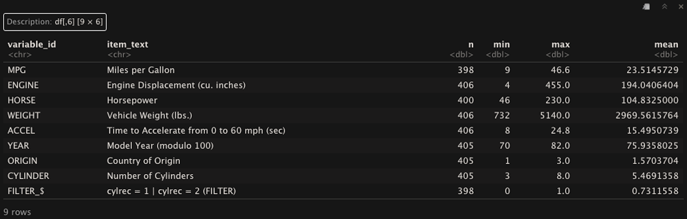

Tidy and Clean that Data
Nov 7th, 2025 posted by N.K.Pizano
Tidy
Tidy data refers to a standardized way of organizing datasets so they are easy to manipulate, analyze, and visualize. In tidy data, also referred to as structured data, where each variable forms its own column, each observation forms its own row, and each value occupies a single cell. This structure allows R tools—especially those in the tidyverse—to work seamlessly because functions are designed to operate on well-defined rows and columns. In contrast, untidy data often breaks these rules: variables may be spread across multiple columns, values may be packed together in a single cell, column names may contain data instead of labels, or observations may be split across multiple tables or formats. These issues can make analysis confusing, error-prone, or inefficient. While tidying is the first step to preprocessing your data, the steps that follow are idosyncratic to the data. Every data set is different and their cleaning needs vary.
Common Steps
- Importing Data: Properly importing data is the first step in tidying data in R. The packages and functions you use are dependent on the file extension. Here are useful packages followed by functions:
- reader (import CSV/TSV files): read_csv(), read_tsv(), parse_number(), type_convert()
- readxl (import Excel files): read_excel(), excel_sheets()
- vroom (import Large files): vroom(), vroom_lines()
- Reshaping data: Sometimes tidying your data requires reorganizing it—also called reshaping—from long to wide formats. Wide format helps ensure that every column is a variable and every row is an observation. According to tidyr documentation , long format assists with "lengthening" the original dataset. For example, if you wanted to "stack" the same variable from different time points, you could create a column with those variable values and an additional column with a corresponding label of the time point at which the data was collected. In other words, you would reduce the number of columns by condensing them. Other common reorganizing steps include, spliting one column into two or more or combining multiple into one. Changing the data structure may be useful with applying specific analytical techniques or visualizations.Here are useful packages followed by functions:
- tidyr: pivot_longer(), pivot_wider(), separate(), unite(), nest()
- base R: reshape(), data.table::melt()*,
- Recoding: A common reason for my peers to visit me during office hours surrounds recoding data. Recoding is the process of changing the values of a variable so the data becomes easier to analyze, interpret, or model.This often includes renaming categories, collapsing multiple groups into broader ones, converting text to numeric codes, or even creating new variables based on existing ones. Honestly, there are so many different functions that help recoding. Here are my favorite packages followed by functions for recoding:
- dplyr (In tidyverse package): mutate(), case_when, recode()
- forcats (In tidyverse package;helps with factor data): fct_recode(), fct_collapse(), fct_relevel(), fct_lump()
- car (helps with recoding into multiple conditions): recode()
- lubridate (recode or transformaing datasets): ymd(), mdy(), dmy(), ymd_hms(), mdy_hm()
- Hmisc (bin numerical values;assign variable labels): cut2(),label()
- Missing Data and Basic Exploring: Evaluating missing data is a significant step in tidying data, from identifying missing values/labels to determining the missing data mechanism. Some data exploration functions can also provide some basic information about the presence of missing data.
- skimr: skim()
- naniar: vis_miss(), replace_with_na(), miss_var_summary()
- Hmisc: describe()